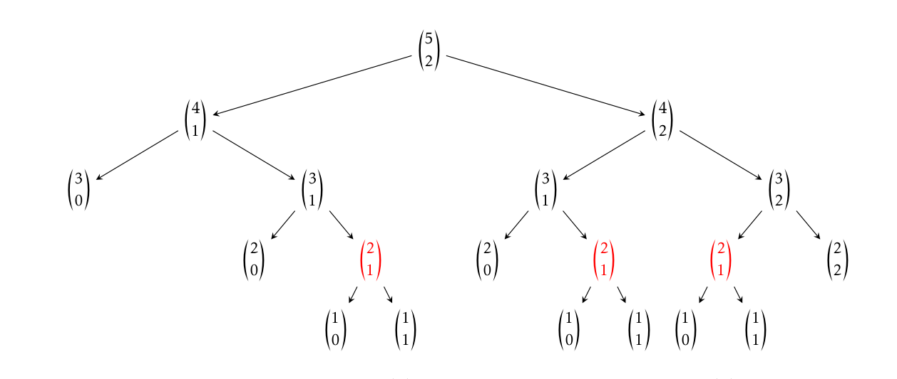
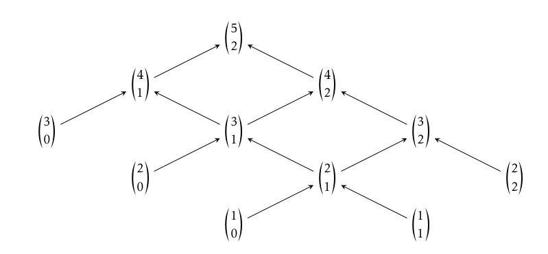
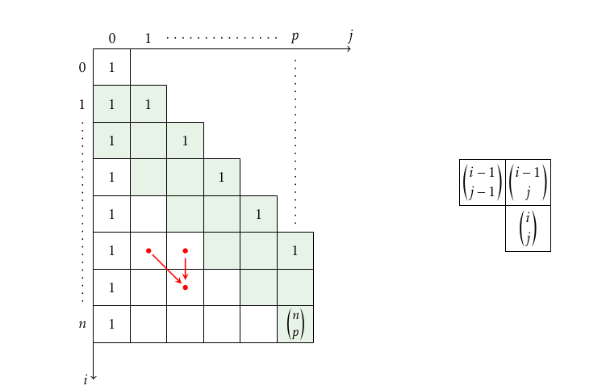
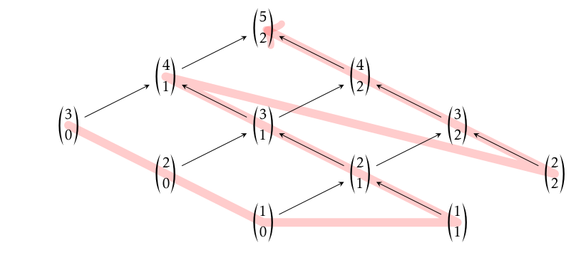
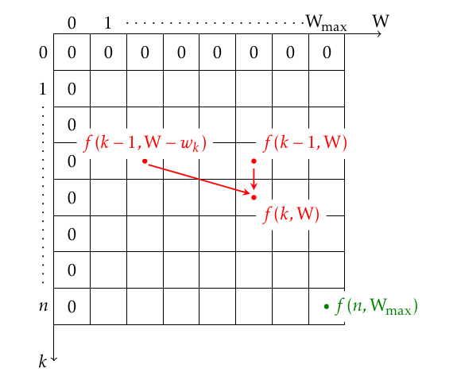
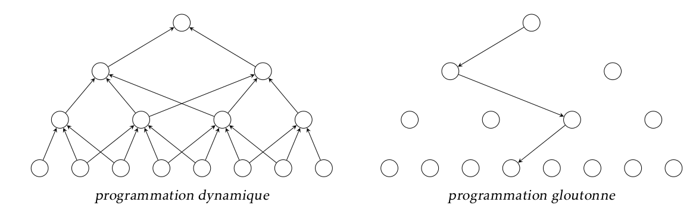

Programmation dynamique#
Introduction#
from mesurer import mesure
import numpy as np
##cette fonction permet de mesurer le temps d'exécution d'une autre fonction
Un inconvénient de la programmation récursive#
Nous allons nous intéresser au calcul du coefficient binomial \(C^p_n=\binom{n}{p}\) Une solution consiste à utiliser la programmation récursive et la formule de Pascal, ce qui nous amène à écrire :
def binom(n, p):
if p == 0 or n == p:
return 1
return binom(n- 1, p -1) + binom(n -1, p)
mesure(binom)(30,15)
Temps d'execution :62.49358534812927 secondes
155117520
Malheureusement, cette fonction s’avère très peu efficace, même pour de relativement faibles valeurs de n et p : à titre d’illustration, il faut 42 secondes à mon ordinateur pour calculer binom(30,15),
La raison en est facile à comprendre : lorsqu’on observe par exemple l’arbre de calcul de \(\binom{5}{2}\) on constate qu’il ya des appels récursifs sont identiques et donc superflus (figure 1).
Nous pouvons par exemple constater que le calcul de \(\binom{5}{2}\) nécessite de calculer trois \(\binom{2}{1}\) Et l’expérience montre que le calcul de \(\binom{30}{15}\), fait appel 40 116 600 au calcul de \(\binom{2}{1}\).

Où est le problème ?#
Le problème à résoudre, ici le calcul de \(\binom{n}{p}\), se ramène à la résolution de deux sous-problèmes : le calcul de \(\binom{n-1}{p-1}\) et de \(\binom{n-1}{p-1}\), sous-problèmes qui sont en interaction.
Par exemple, on constate sur la figure 1 que le calcul de \(\binom{4}{1}\) et le calcul de \(\binom{4}{2}\) font tous deux appel au même sous-problème : le calcul de \(\binom{3}{1}\).
Ainsi, la présence de sous-problèmes en interaction peut faire croitre très rapidement la complexité d’une fonction, au point d’en rendre son usage rédhibitoire.
Tout comme les problèmes que l’on résout par une méthode « diviser pour régner », les problèmes que l’on résout par la programmation dynamique se ramènent à la résolution de sous-problèmes de tailles inférieures.
Mais à la différence de la méthode « diviser pour régner », ces sous-problèmes ne sont pas indépendants, ce qui impose d’accompagner la programmation récursive par une analyse fine des relations de dépendance, ou beaucoup plus simplement par l’utilisation de la mémoïsation qui gère les relations de dépendance à notre place.
Une solution proposée par la programmation dynamique de type (Bottom UP)#
La solution proposée par la programmation dynamique consiste à commencer par résoudre les plus petits des sous-problèmes, puis de combiner leurs solutions pour résoudre des sous-problèmes de plus en plus grands.
La solution proposée par la programmation dynamique consiste à commencer par résoudre les plus petits des sous-problèmes, puis de combiner leurs solutions pour résoudre des sous-problèmes de plus en plus grands.
Concrètement, le calcul de \(\binom{5 }{2}\) se réalise en suivant le schéma : 
Pour réaliser ce type de solution on utilise souvent un tableau, ici un tableau bi-dimensionnel \((n + 1) \times (p + 1)\) (dont seule la partie pour laquelle \(i > j\) sera utilisée).
Ce tableau sera progressivement rempli par les valeurs des coefficients binomiaux, en commençant par les plus petits: 
Il faut faire attention à bien respecter la relation de dépendance (modélisée par les flèches sur le schéma ci-dessus) pour remplir les cases de ce tableau : la case destinée à recevoir la valeur de \(\binom{i}{j}\) ne peut être remplie qu’après les cases destinées à recevoi \(\binom{i-1}{j-1}\) et \(\binom{i-1}{j}\)
def binom_bottom_up(n, p):
## Algorithme itératif avec list
t = np.zeros((n + 1, p + 1), dtype=np.int64)
for i in range(0, n + 1):
t[i, 0] = 1
for i in range(1, p + 1):
t[i, i] = 1
for i in range(2, n + 1):
for j in range(1, min(p, i) + 1):
t[i, j] = t[i - 1, j - 1] + t[i -1, j]
return t[n, p]
Au prix d’un coût spatial (la création du tableau) cet algorithme est bien plus efficient que l’algorithme récursif initial puisque sa complexité temporelle et spatiale est maintenant en O(np). Remarque. Notons que cette solution n’est pas encore optimale : il est facile de constater sur le schéma de dépendance que l’algorithme ci-dessus remplit des cases inutiles pour le calcul de \(\binom{n} {p}\) : seules celles qui sont colorées sont nécessaires.
Un autre inconvénient, plus important celui-là réside dans la perte de lisibilité de l’algorithme, comparativement à l’algorithme récursif. L’idéal serait donc de combiner l’élégance de la programmation récursive avec l’efficacité de la programmation dynamique.
Une solution proposée par la programmation dynamique de type (Top Down)#
La solution existe, elle porte le nom de mémoïsation.
Elle consiste à associer à la fonction un dictionnaire qui va mémoriser le résultat du calcul réalisé. Ainsi, à chaque fois que le programme aura besoin de calculer une valeur, il ira voir dans le dictionnaire si la valeur dont il a besoin a déjà été calculée, et ne réalisera le calcul que dans le cas contraire, en ajoutant ensuite la nouvelle valeur calculée au dictionnaire.
Le calcul du coefficient binomial va alors prendre la forme qui suit :
binom_dict = {}
def binom_top_down(n, p):
if (n, p) not in binom_dict:
if p == 0 or n == p:
b = 1
else:
b = binom_top_down(n - 1, p - 1) + binom_top_down(n - 1, p)
binom_dict[(n, p)] = b
return binom_dict[(n, p)]
On peut observer que le programme récursif se retrouve presque mot pour mot lignes 5 à 8. ! Calculons \(\binom{5}{2}\) avec cette fonction, puis observons le contenu du dictionnaire :
binom_top_down(5, 2)
10
print(binom_dict)
{(3, 0): 1, (2, 0): 1, (1, 0): 1, (1, 1): 1, (2, 1): 2, (3, 1): 3, (4, 1): 4, (2, 2): 1, (3, 2): 3, (4, 2): 6, (5, 2): 10}
On peut constater qu’on y retrouve les 10 valeurs nécessaires pour réaliser ce calcul. J’ai représenté figure suivante l’ordre dans lequel ces valeurs ont été introduites dans le dictionnaire. 
Programmation Dynamique et optimisation#
Un des principaux champs d’applications de la programmation dynamique est la résolution de problèmes d’optimisation. Il s’agit de problèmes dont chaque solution possède une valeur.
On cherche alors une solution de valeur optimale (minimale ou maximale). Il existe de nombreuses techniques pour résoudre ce genre de problèmes et la programmation dynamique en fait partie. Des méthodes gloutonnes peuvent également marcher.
Il est donc logique de se demander à quelles conditions doit-on utiliser la programmation dynamique pour résoudre un problème d’optimisation.
Il faut premièrement que l’ensemble des éléments constituant le problème soit discret et fini . Par exemple pour la recherche de plus courts chemins, ces éléments sont les sommets du graphe et les arêtes les reliant entre eux.
Ensuite, une solution optimale au problème global doit induire des
solutions optimales aux sous-problèmes.
Enfin, il est nécessaire que les sous-problèmes ne soient pas indépendants .
Démarche de résoluton#
On retrouvera généralement quatre étapes dans la conception d’une solution optimale en utilisant la technique de programmation dynamique :
Caractériser la structure d’une solution optimale.
Défnir par récurrence la valeur d’une solution optimale.
Calculer la valeur d’une solution optimale par une méthode Top Down ou Bottom Up.
Construire la solution optimale .
Exemple: Problème Sac à Dos.#
Le problème du Sac à Dos est un problème classique en informatique. Il modélise une situation analogue au remplissage d’un sac.
Une personne veut remplir un sac à dos ne pouvant pas supporter plus d’un certain poids \(W_{max}\in \mathbb{N}\), et elle dispose de n objets On note l’ensemble des objects par \(O = \{1, . . . , n\}\).
Chaque objet i a une valeur \(v_ i\) et un poids \(w_i\).
Le problème est de trouver un ensemble d’objets tels que:
tous les objets de cet ensemble puissent être mis dans le sac.
la somme des valeurs de ces objets soit maximale.
Le problème d’optimisation correspond à trouver un sous-ensemble \(I\) de \(O\) d’objets dont le poids total est inférieure à \(W\) et dont la valeur totale \(\Sigma_{i\in I}v_i \) soit maximum.
#exemple
# La list des poids
WL=[3,9,6,3]
#La list des valeurs
VL=[4,2,10,9]
#le poids maximal
Wmax=15
#le nombre d'objets
n=len(WL)
S=list(zip(WL,VL))
print(S)
sorted(S,key=lambda e:(e[1]/e[0]),reverse=True)
[(3, 4), (9, 2), (6, 10), (3, 9)]
[(3, 9), (6, 10), (3, 4), (9, 2)]
def sacAdos_naive(VL,WL,Wmax):
if len(VL)==0:
return 0
if Wmax==0:
return 0
v,w=VL[-1],WL[-1]
if w<=Wmax:
return max(v+sacAdos_naive(VL[:-1],WL[:-1],Wmax-w),sacAdos_naive(VL[:-1],WL[:-1],Wmax))
return sacAdos_naive(VL[:-1],WL[:-1],Wmax)
def sacAdos_naive2(k,Wmax):
#La meme chose avec que la précident sauf on prend comme parametre le nombre d'elements de la list et non pas la list
if k==0:
return 0
if Wmax==0:
return 0
v,w=VL[k],WL[k]
if w<=Wmax:
return max(v+sacAdos_naive2(k-1,Wmax-w),sacAdos_naive2(k-1,Wmax))
return sacAdos_naive2(k-1,Wmax)
print("le valeur maximal par la méthode naive est ",sacAdos_naive(VL,WL,Wmax))
print("le valeur maximal par la méthode naive est ",sacAdos_naive2(n-1,Wmax))
le valeur maximal par la méthode naive est 23
le valeur maximal par la méthode naive est 19
La solution dynamique avec la programmation dynamique par la méthode Bottom_UP#
Pour calculer cette valeur de façon dynamique, nous allons utiliser un tableau bi-dimensionnel de taille \((n + 1) × (W_{max} + 1)\) destiné à contenir les valeurs de \(f (k, w)\) pour \(k \in [0, n]\) et \(W \in [0, W_{max}]\).
Nous prendrons comme valeurs initiales f (0, W) = f (k, 0) = 0, et notre but est de calculer \(f(n, W_{max} )\).
Pour remplir ce tableau, il est primordial de respecter l’ordre de dépendance des cases de ce tableau : la case \(f (k, W)\) ne peut être calculée que lorsque les cases \(f (k-1, W)\) et \(f (k -1, W -w_k )\) auront été remplies. 
En considérant que les valeurs \(c_k\) et \(w_k\) sont données sous forme de tableaux, on en déduit l’algorithme :
import numpy as np
def sacAdos_Bottom_Up(WL,VL, Wmax):
n=len(VL)
f=np.zeros((n+1,Wmax+1))
for k in range(n):
for w in range(1,Wmax+1):
if WL[k]<=w:
f[k+1,w]=max(VL[k]+f[k,w-WL[k]],f[k,w])
else:
f[k+1,w]=f[k,w]
return f[n,Wmax]
#return f
print("le valeur maximal par la méthode bottom up (iteratif) est ",sacAdos_Bottom_Up(WL,VL,Wmax))
le valeur maximal par la méthode bottom up (iteratif) est 23.0
Remarque. Cet algorithme calcule la valeur maximale qui peut être emportée dans le sac, mais pas la façon d’y parvenir.
Pour la connaître il faut utiliser le tableau (ou le dictionnaire) calculé par la fonction précédente, et retrouver le chemin qui mène de la case initiale à la case finale.
Par exemple, si on modifie la fonction non récursive (la première) pour qu’elle renvoie le tableau f qui a été calculé au lieu de la valeur \(f[len(WL), Wmax]\) , le fonction qui détermine les objets à choisir s’écrira :
def sacAdos_Bottom_Up_modifié(WL,VL, Wmax):
n=len(VL)
f=np.zeros((n+1,Wmax+1))
for k in range(n):
for w in range(1,Wmax+1):
if WL[k]<=w:
f[k+1,w]=max(VL[k]+f[k,w-WL[k]],f[k,w])
else:
f[k+1,w]=f[k,w]
return f[n,Wmax],f
def objetsAchoisir(VL, WL, Wmax):
v,f = sacAdos_Bottom_Up_modifié(VL, WL, Wmax)
sac = []
k, W = len(VL), Wmax
while k > 0:
if f[k, W] > f[k - 1, W]:
sac.append((VL[k - 1], WL[k - 1]))
W -= WL[k - 1]
k -= 1
return v,sac
objetsAchoisir(VL, WL, Wmax)
(15.0, [(10, 6), (2, 9)])
La solution dynamique avec la programmation dynamique par la méthode Top_Down#
def sacAdos_TD(k,Wmax,memo=dict()):
if (k,Wmax) not in memo:
if k==-1:
memo[(k,Wmax)]=0
return memo[k,Wmax]
if Wmax<0:
memo[k,Wmax]=0
return memo[k,Wmax]
v,w=VL[k],WL[k]
if w<=Wmax:
memo[k,Wmax]= max(v+sacAdos_TD(k-1,Wmax-w,memo),sacAdos_TD(k-1,Wmax,memo))
else:
memo[k,Wmax]=sacAdos_TD(k-1,Wmax,memo)
return memo[k,Wmax]
sacAdos_TD(n-1,Wmax)
23
La solution linéaire avec la programmation gloutoune#

Pour élaborer un algorithme glouton résolvant le problème, il faut définir une heuristique, ici un critère de priorité pour le choix des objets à prendre.
Nous pouvons par exemple choisir en priorité les objets dont le rapport \( \frac{valeur}{poids}= \frac{v_i}{w_i}\) est maximal, et remplir le sac tant que c’est possible :
def sac_à_dos_glouton(WL,VL,Wmax):
S=sorted([(WL[k],VL[k]) for k in range(len(WL)) ],
key=lambda e:e[1]/e[0],reverse=True)
Sol=[]
w=Wmax
v=0
for o in S:
if o[0]<=w:
Sol.append(o)
v+=o[1]
w-=o[0]
return v,Sol
#return v
sac_à_dos_glouton(WL,VL,Wmax)
(23, [(3, 9), (6, 10), (3, 4)])
Cette fois l’algorithme heristique gloutoun donne la solution optimale, mais ce n’est pas le cas en général
Car il donne une solution qui est une proche mais non pas nécessairmet égal à la solution optimal.
Pour évaluer la qualité de cette heuristique, On réalis1000 expériences pour chacune desquelles On :
pris au hasard 100 objets de valeurs comprises entre 1 et 20 et de poids compris entre 1 et 30 ;
calcul la valeur optimale obtenue pour un poids maximal égal à 300 à la fois par l’algorithme glouton ci-dessus et par l’algorithme dynamique que nous étudierons plus loin.
def fiabilité(glouton,dynamique_bu,samples,number_of_objects):
VLL=np.random.randint(1,20,(samples,number_of_objects))
WLL=np.random.randint(1,30,(samples,number_of_objects))
Wmax=300
glouton_values=[]
dynamique_values=[]
for i in range(samples):
glouton_values.append(glouton(WLL[i],VLL[i],Wmax)[0])
dynamique_values.append(dynamique_bu(WLL[i],VLL[i], Wmax))
return glouton_values,dynamique_values
g,d=fiabilité(sac_à_dos_glouton,sacAdos_Bottom_Up,200,50)
g=np.array(g)
d=np.array(d)
100*sum(abs(g-d)<0.1)/len(g)
48.5
fiab=sum(abs(g-d)<0.1)
def grand_écart(g,d):
#l'equivalent au norm sup dans un evn
imax=0
max=d[0]-g[0]
for i in range(len(g)):
ecart=d[i]-g[i]
if max<ecart:
max=ecart
imax=i
return imax
i=grand_écart(g,d)
résultat="""Sur les 200 expériences, {} ont donné le même résultat pour chacun des deux algorithmes,
et dans le cas des {} autres, l'algorithme glouton a toujours rendu un résultat au moins égal à {}% du résultat de l'algorithme dynamique.
On peut donc considérer ici qu'à défaut de donner un résultat toujours exact, l'algorithme glouton donne un résultat acceptable tout en ayant une complexité moindre que l'algorithme dynamique.
""".format(fiab,200-fiab,int((g[i]/d[i])*100))
print(résultat)
Sur les 200 expériences, 97 ont donné le même résultat pour chacun des deux algorithmes,
et dans le cas des 103 autres, l'algorithme glouton a toujours rendu un résultat au moins égal à 98% du résultat de l'algorithme dynamique.
On peut donc considérer ici qu'à défaut de donner un résultat toujours exact, l'algorithme glouton donne un résultat acceptable tout en ayant une complexité moindre que l'algorithme dynamique.